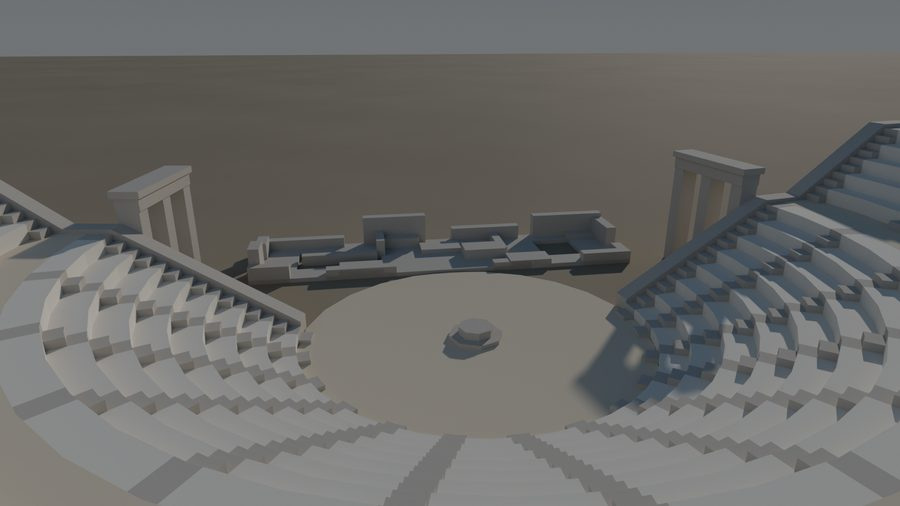
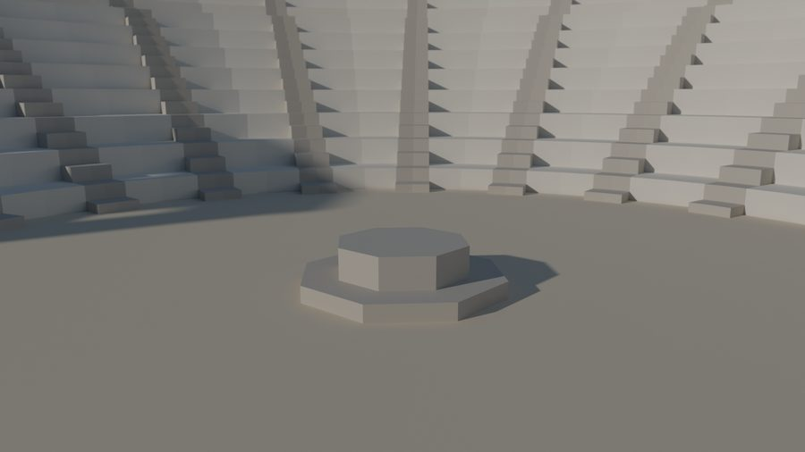
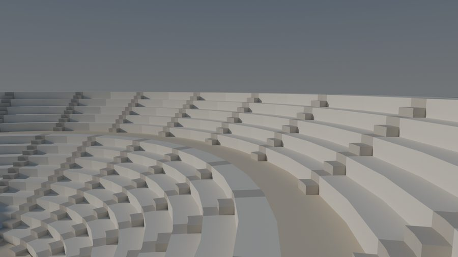
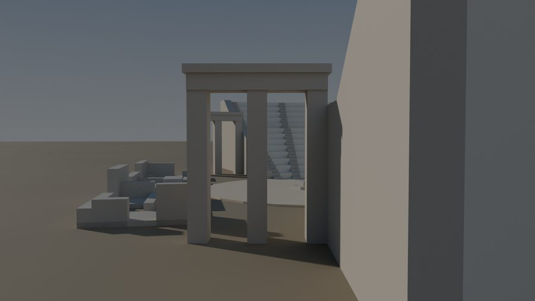
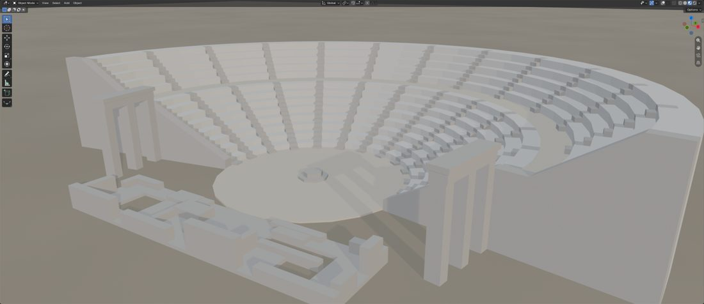
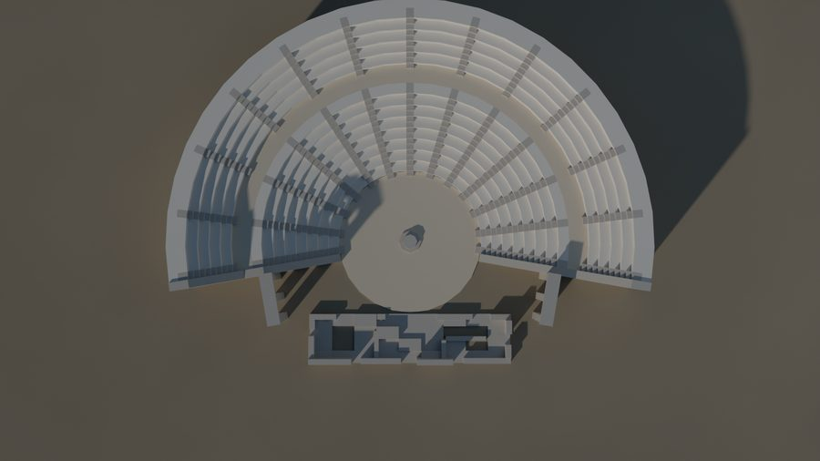

Ancient Theatre: Epidaurus in low poly
The 4th-century BC theatre at Epidaurus, simplified to a 20 m model: a 200° horseshoe of stone seats lathed from one drawn profile, an orchestra with its altar, thirteen stairways, two diagonal wing walls with their gates, and the ruins of the stage building. Everything is flat-shaded limestone, lit by a low afternoon sun.





What's in the scene
A real Greek theatre is a hillside cut into rows. Here it's seven separate meshes in one Epidaurus collection, all in metres, centred on the world origin, with the open front (the stage) facing −Y.
| Object | What it is | Built with | Material |
|---|---|---|---|
Seating_Bowl | The theatron: 8 lower rows, the diazoma walkway, 5 upper rows and the rim, every riser the same height within its tier | one profile + Screw modifier | Seats; Walkway on the diazoma; Structural on the stair strips |
Orchestra_Floor | The round dancing floor, 6.4 m across | Cylinder | Walkway |
Thymele_Altar | The low altar at the centre | Cylinder + inset + extrude | Structural |
Radial_Stairs | The raised half-steps of the 13 stairways (klimakes) | small blocks, copied around | Structural |
Retaining_Walls | The two wing walls (analemmata) at the ends, their top following the seats | 7-point profile, mirrored | Structural |
Parodos_Gates | The two gates across the side entrances (parodoi) | boxes | Structural |
Skene_Ruins | What remains of the stage building: wall stubs, raised blocks and pits | boxes | Structural |
Step 1 · New file, metric units, one collection
- File › New › General, delete the default cube, camera and light (A, X). Save as projects/05-ancient-theatre/epidaurus.blend.
- Scene tab › Units: Unit System Metric, Unit Scale 1.0, Length Meters.
- In the Outliner, right-click the Scene Collection › New Collection, rename it
Epidaurusand click it so new objects land inside.
Step 2 · Three limestone materials
Create the three materials once (Material tab › New, then rename). Later objects reuse them from the material browser next to the name field. For each one, also set Viewport Display › Color to the same Base Color so the stone reads in Solid view too.
| Material | Base Color | Roughness | Specular IOR Level | Used on |
|---|---|---|---|---|
| Mat_Limestone_Seats | (0.85, 0.82, 0.75) | 0.85 | 0.20 | seat rows, rim, back wall |
| Mat_Limestone_Walkway_Orchestra | (0.76, 0.68, 0.54) | 0.90 | 0.15 | diazoma, orchestra floor |
| Mat_Limestone_Structural | (0.58, 0.55, 0.50) | 0.88 | 0.20 | stairs, walls, altar, skene |
Step 3 · Draw the seating profile
The whole bowl comes from one flat outline: a slice through the seats, drawn in the front view on the X–Z plane, then spun around the Z axis. You draw it by extruding a single vertex step by step, typing exact distances.
- Add › Mesh › Plane, Tab into Edit Mode, select all and M › At Center: one vertex. In the Sidebar (N) set its position to (3.2, 0, 0), the inner foot of the seats. Name the object
Seating_Bowl. - Front view (Numpad 1). Each row is two extrusions: E Z
0.25Enter (the riser), then E X0.45Enter (the seat). Do it 8 times: you end at X 6.80, Z 2.00. - Diazoma: E X
0.8(the walkway), ending at (7.60, 2.00). - Upper tier: 5 rows of E Z
0.28, E X0.4, starting straight from the walkway and ending at (9.60, 3.40). The first row rises 0.28 from the walkway like every other row; a taller first riser looks like a wall in front of the upper seats. - Rim and back: E X
0.4(the top curb, to X 10.0), then E Z-3.4(the outer back wall, down to the ground). - Close the outline: select the last vertex and the first one and press F. That edge is the ground line of the slice. Do not fill the whole outline with a face; the Screw modifier only needs the edges.
Step 4 · Lathe it with the Screw modifier
- Back in Object Mode, Modifiers tab › Add Modifier › Generate › Screw. Set Axis Z, Angle 200°, Screw 0, Steps Viewport and Render 24, tick Merge, untick Smooth Shading.
- The bowl now runs from 0° (the +X side) to 200°. To centre it on +Y, rotate the object R Z
-10and apply it: Ctrl+A › Rotation. It now spans −10° to +190°, with the open side facing −Y. - Apply the modifier (the modifier's drop-down arrow › Apply, or Ctrl+A with the pointer over it). The bowl becomes a real mesh you can edit.
Step 5 · Close the ends, colour the walkway
- Edit Mode, deselect all, Select › Select All by Trait › Non Manifold: two outlines light up, the open slices at −10° and +190°.
- Deselect, then Alt+click one edge of the −10° outline to select just that loop and press F. Repeat for the +190° end. The bowl is now a closed solid. Select all and Shift+N (Recalculate Outside).
- Material tab: add Mat_Limestone_Seats as slot 0 and Mat_Limestone_Walkway_Orchestra as slot 1.
- Face select (3), Alt+click the flat walkway at Z 2.0 to select its ring of 24 faces, click slot 1 and press Assign.
- Object Mode, right-click › Shade Flat.
Step 6 · Orchestra floor and altar
- Orchestra_Floor: Shift+A › Mesh › Cylinder, and in the Adjust Last Operation panel: Vertices 24, Radius 3.2, Depth 0.1, Location (0, 0, 0). It spans Z −0.05 to +0.05, filling the opening inside the seats. Material: Walkway.
- Thymele_Altar: another Cylinder with Vertices 8, Radius 0.5, Depth 0.08, Location Z 0.09 (the base plinth, Z 0.05 to 0.13).
- Edit Mode, select only its top face, I Inset with Thickness 0.166 (that leaves an inner octagon of radius 0.32), then E
0.15to raise the drum to Z 0.28. Keep it low: the real thymele is barely a step above the orchestra floor. One solid, no overlapping parts. Material: Structural, Shade Flat.
Step 7 · Thirteen radial stairways
Each stairway has two steps per seat row, each half a seat's height, like the real ones. Half of those steps are simply the seats themselves: a stair climbs over the front half of each row at exactly the seat's level. So a stairway is built in two parts: a 0.32 m strip of the seating painted in stair stone, and small blocks for the raised half-steps in between.
- Mark the strips on the seats. Select
Seating_Bowl, add Mat_Limestone_Structural as its third material slot, and go into Edit Mode. In the Top view, for each stair line (every second seam, from −10° to +190°), use the Knife tool (K, then C to cut through) or Bisect to cut two lines parallel to the seam, 0.16 m either side of it. For the two end stairways cut one line, 0.32 m inside the end. - Select the treads and risers between each pair of cuts, on both tiers but not on the walkway, and Assign the stair material. These faces are the stair's seat-level treads and the risers between its steps: the full 0.32 m wide and level with the seats, because they are the seats.
- The half-steps: new object
Radial_Stairs. On every row except the top one, the stair has a block on the back half of the row: 0.32 wide, half a row deep (0.225 on the lower tier, 0.20 on the upper) and half a row tall (0.125 / 0.14), standing on the seat and touching the next row's riser. Add one more in front of each tier's first row: on the orchestra floor and on the walkway. - Make one block, then copy it up the stair: each copy moves one row out (0.45 or 0.40) and one row up (0.25 or 0.28). That's 8 blocks for the lower flight and 5 for the upper one. Then copy the whole stairway around the origin: pivot 3D Cursor, Shift+D, R Z
16.667, and repeat with Shift+R up to 190°. The end stairways sit inside the bowl against the walls, 0 to 0.32 m from the end. - Material: Structural, Shade Flat.
Step 8 · Retaining walls
The wing walls hold up the ends of the bowl and frame the side entrances (parodoi). Their top follows the seats at the same angle, just a little above them, so spectators sitting beside a wall still see the orchestra.
- New object
Retaining_Walls. In the front view, draw this outline on the X–Z plane, close it and fill it (F): (3.2, 0) → (3.2, 0.33) → (6.35, 2.08) → (7.2, 2.08) → (9.2, 3.48) → (10.0, 3.48) → (10.0, 0). That's the lower tier's slope, level over the walkway, the steeper upper tier's slope, then level along the rim. - E Y
-0.35: a 0.35 m-thick wall on the −Y side of the X axis, so it ends up just outside the bowl. Then R Z-10around the origin. It now stands against the bowl's −10° end, face to face with the end cap. - The +190° wall is its mirror image: select it, Shift+D, right-click, S X
-1(pivot at the 3D cursor), then Shift+N, because mirroring turns faces inside out. - Material: Structural, Shade Flat.
Step 9 · The parodos gates
Each side entrance is closed by a stone gate with two doorways: three square pillars, a lintel beam across them and a slightly wider cornice slab on top. It stands across the corridor 6.2 m out along the wall, reaching from the wall's outer face about 2.1 m across, which leaves it roughly 1 m clear of the corner of the stage ruins.
| Part | Along the wall (depth) | Across the corridor | Height Z |
|---|---|---|---|
| 3 pillars, 0.30 square | 0.40 | centres 0.50, 1.40 and 2.30 m from the wall line | 0 → 2.30 |
| Lintel | 0.45 | 0.35 → 2.45 | 2.30 → 2.55 |
| Cornice | 0.55 | 0.30 → 2.50 | 2.55 → 2.68 |
- Build the gate on the +X axis first, like the stairs: centre it at X 6.2, with "across the corridor" running along −Y (the wall is at Y 0 to −0.35). Each part is a cube with the Dimensions above: the pillars are 0.40 × 0.30 × 2.30.
- Join the five boxes (Ctrl+J), name it
Parodos_Gates, rotate R Z-10around the origin so it stands against the −10° wall, then mirror a copy across X for the +190° side, exactly as for the walls. - Material: Structural, Shade Flat.
Step 10 · The ruins of the stage building
The stage building at Epidaurus survives only as foundations: a flat plot beside the orchestra with broken wall stubs of different heights, gaps where stones are missing, and raised and sunken patches inside. The low-poly version is a 9.0 × 2.2 m plot (X −4.5 to 4.5, Y −5.45 to −3.25) made entirely of boxes.
- Paving: a grid of 9 × 4 tiles, each 1.0 × 0.55 m. Most are 0.10 tall; a few are raised foundation blocks of 0.22 or 0.35; and five are simply left out, so they read as sunken pits down to the ground.
- Wall stubs: 0.25 m-thick boxes along the edges, broken into pieces with gaps: the back (south) wall up to 0.85 m tall, the front (north) one only 0.20 to 0.40, the side walls 0.30 to 0.75. Add three thinner (0.20 m) interior partitions of 0.25 to 0.50.
- Vary the heights on purpose; equal stubs look built rather than ruined. Join everything into
Skene_Ruins, Material: Structural, Shade Flat.
| Paving row (north to south) | Tile heights, west to east (0 = pit) |
|---|---|
| 1 (Y −3.25 to −3.80) | 0.10 · 0.10 · 0.22 · 0.10 · 0.10 · 0.10 · 0.22 · 0.10 · 0.10 |
| 2 | 0.10 · 0 · 0.10 · 0.35 · 0.10 · 0.10 · 0 · 0 · 0.10 |
| 3 | 0.10 · 0 · 0.10 · 0.10 · 0.22 · 0.10 · 0.10 · 0 · 0.10 |
| 4 (Y −4.90 to −5.45) | 0.22 · 0.10 · 0.10 · 0.10 · 0.10 · 0.35 · 0.10 · 0.10 · 0.10 |
Step 11 · Check every object
- For each object: Ctrl+A › All Transforms, so Location reads 0, Rotation 0 and Scale 1, and all the geometry lives in the mesh.
- Edit Mode, Select › Select All by Trait › Non Manifold selects nothing on any object: every piece is a closed solid.
- Overlays › Statistics and the Sidebar's Dimensions should match:
| Object | Vertices | Faces | Size X × Y × Z (m) |
|---|---|---|---|
| Seating_Bowl | 1470 | 1442 | 19.99 × 11.74 × 3.40 |
| Orchestra_Floor | 48 | 26 | 6.40 × 6.40 × 0.10 |
| Thymele_Altar | 32 | 26 | 1.00 × 1.00 × 0.23 |
| Radial_Stairs | 1924 | 1586 | 18.29 × 10.80 × 3.26 |
| Retaining_Walls | 28 | 18 | 19.70 × 1.53 × 3.48 |
| Parodos_Gates | 80 | 60 | 12.65 × 2.26 × 2.68 |
| Skene_Ruins | 368 | 276 | 9.00 × 2.20 × 0.85 |

Step 12 · Sun, sky and ground
Theatres are outdoor buildings, so instead of the dark studios of the earlier projects this one gets daylight. Put the ground in a Ground collection and the lights in Sun and Sky.
- World: Texture Coordinate (Generated) › Separate XYZ (Z) › Color Ramp from (0.78, 0.82, 0.86) at 0 (the hazy horizon) to (0.22, 0.38, 0.66) at 0.55 (blue overhead) › Background, Strength 0.45.
- Ground: a 300 × 300 m plane at Z 0. Material: Noise Texture (Object coordinates, Scale 0.08, Detail 8) mixing (0.30, 0.25, 0.18) and (0.42, 0.36, 0.26) into Base Color, Roughness 0.95: dry earth.
| Light | Type | Strength | Color | Position / aim |
|---|---|---|---|---|
| Sun | Sun, angle 1.5° | 3.2 | (1.0, 0.92, 0.80) | from (−24, −30, 15) toward the origin: low, from the stage side |
| Sky_Fill | Area, Disk 20 m | 700 W | (0.80, 0.88, 1.0) | (18, 6, 22), aimed at (0, 2, 0) |
Step 13 · Cameras and render
| Camera | Location | Focus empty at | Lens | F-stop |
|---|---|---|---|---|
| Cam_01_Front_34 | (−12.5, −18.0, 9.5) | (0, 1.8, 1.2) | 35 | 11 |
| Cam_02_From_Upper_Seats | (2.0, 9.6, 5.3) | (0, −3.0, 0.6) | 24 | 8 |
| Cam_03_Orchestra_Altar | (0.9, −2.7, 0.95) | (0, 0, 0.35) | 28 | 2.8 |
| Cam_04_Diazoma_Walkway | (6.77, 2.46, 3.55) | (1.25, 7.09, 2.6) | 24 | 5.6 |
| Cam_05_Parodos_Entrance | (12.2, −3.4, 1.6) | (3.0, −1.8, 1.3) | 28 | 8 |
| Cam_06_Top_Plan | (0, −0.5, 36) | (0, 0.5, 0) | 35 | 16 |
- Each camera tracks its focus empty (a Track To constraint, or place it and use Ctrl+Alt+Numpad 0). Depth of Field on, focus object = its empty. Keep them in
Render Cameras›Camera Focus Targets. - Render tab: Cycles, GPU, Noise Threshold 0.015, Max Samples 192, Denoise on, Max Bounces 12. Color Management: AgX, Punchy, Exposure −0.3.
- Output 1920 × 1080 PNG. Render each camera and save it into 05-ancient-theatre/renders/ with the camera's name. Earlier versions are kept beside them: renders/v1_stepped_walls_foundation/ (stepped walls, a full stage foundation) and renders/v2_tall_walls_raised_stairs/ (gates close to the stage ruins, a taller straight wall, stairs standing 3 cm above the seats).

Check your result
- Seven objects in the
Epidauruscollection, all at the origin with no rotation or scale. - The bowl spans −10° to +190° and is open toward the stage (−Y).
- The walkway halfway up is a warmer sand colour than the seats.
- 13 stairways climb both tiers in equal steps, from the orchestra to the walkway and from the walkway to the rim, exactly level with the seat rows they meet, the same width all the way up, and with nothing sticking up at their ends.
- The wing walls follow the seats at the same angle, 8 cm above their edges; a gate with two doorways stands across each side entrance, well clear of the stage ruins.
- The stage building is a low ruin: uneven wall stubs, raised blocks and missing paving.
- Select Non Manifold selects nothing on any object; everything is flat-shaded.